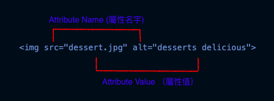
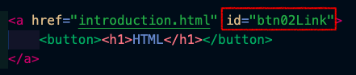
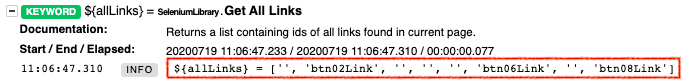

SeleniumLibrary 包含瀏覽器基礎使用的關鍵字。行為包含：尋找頁面指定元素，開啟瀏覽器，截圖，執行 Javascript，滑鼠互動，回傳字串等。。。
※ 關鍵字過多時，若有指定要搜尋的關鍵字，建議按 Ctrl + F 直接搜尋關鍵字。
Alert Should Be Present (警示視窗顯示以及處理) || Handle Alert (警示視窗處理) || Alert Should Not Be Present (警示視窗不顯示) || Assign Id To Element (暫時性指定 ID） || Capture Element Screenshot (擷取元素圖示) || Capture Page Screenshot (擷取頁面) || Checkbox Should Be Selected (復選框勾選) || Checkbox Should Not Be Selected (復選框不應該勾選) || Clear Element Text (清除元素裡面的文字) || Click Button (按指定按鈕) || Click Element (按指定元素) || Click Element At Coordinates (依元素定位的中心點移動 x 跟 y 的位置) || Click Image (點擊圖示) || Click Link (按指定連結) || Close All Browsers (關閉所有瀏覽器) || Close Browser (關閉目前瀏覽器) || Close Window (關閉目前視窗/分頁) || Cover Element (遮蓋指定元素) || Current Frame Should Contain (浮動框架應該包含) || Current Frame Should Not Contain (浮動框架不應該包含) || Delete All Cookies (刪除所有頁面喜好紀錄) || Double Click Element (點擊指定元素兩次) || Drag And Drop (拖拉元素) || Drag And Drop By Offset (拖拉元素位移定位) || Element Attribute Value Should Be (元素屬性的值應該是) || Element Should Be Disabled (元素應在停用狀態) || Element Should Be Enabled (元素在啟用狀態) || Element Should Be Focused (元素在聚焦狀態) || Element Should Be Visible (元素在顯示狀態) || Element Should Contain (元素包含預期文字) || Element Should Not Be Visible (元素不顯示) || Element Should Not Contain (元素不包含預期文字) || Element Text Should Be (元素預期文字) || Element Text Should Not Be (元素不預期文字) || Execute Javascript (執行 Javascript) || Frame Should Contain (浮動框架應該包含文字) || Get All Links (取得頁面所有連結的 ID) || Get Cookie (取得瀏覽器 Cookie) || Get Element Attribute (回傳屬性值) || Get Element Count (回傳指定元素數量) || Get Element Size (回傳指定元素尺寸) || Get Horizontal Position (回傳頁面橫向位置) || Get List Items (回傳清單項目) || Get Location (回傳目前瀏覽視窗網址) || Get Locations (回傳瀏覽器所有網址) || Get Selected List Label (回傳表單標籤) || Get Selected List Labels (回傳多個表單標籤) || Get Selected List Value (回傳表單的值) || Get Selected List Values (回傳多個表單的值) || Input Text (輸入文字) || Input Password (輸入密碼) || Open Browser (開啟瀏覽器) || Page Should Contain Element (頁面應包含此元素) || Wait Until Page Contains (等待直到頁面包含某個文字)
| 關鍵字 (Keywords) | 引述 (Arguements) | 使用範例 (Usage Example) |
|---|---|---|
| Alert Should Be Present (警示視窗顯示以及處理) | text=（警示視窗顯示文字）, action=ACCEPT (確認警示視窗), timeout=None（設定等待警示視窗出現的時間） |
|
| Handle Alert (警示視窗處理) | action=ACCEPT (警示視窗處理), timeout=None（設定等待警示視窗出現的時間） |
視窗出現後有三種處理方法：確認視窗 (ACCEPT)，取消視窗 (DISMISS) 或是讓視窗維持開啟狀態 (LEAVE)。
|
| Alert Should Not Be Present (警示視窗不顯示) | action=ACCEPT (警示視窗處理), timeout=0（設定等待警示視窗出現的時間） |
Alert Should Not Be Present 5s
|
| Assign Id To Element (暫時性指定 ID) | locator (元素定位), ID |
Assign Id To Element xpath=/div/div/example memberID
|
| Capture Element Screenshot (擷取元素圖示) | locator (元素定位), filename=selenium-element-screenshot-{index}.png (截圖的檔案輸出位置與檔名） |
|
| Capture Page Screenshot (擷取頁面) | filename=selenium-screenshot-{index}.png（指定圖示輸出檔案名稱並且加索引） |
|
| Checkbox Should Be Selected (復選框勾選) | locator（元素定位） |
|
| Checkbox Should Not Be Selected (復選框不應該勾選) | locator（元素定位） |
|
| Clear Element Text (清除元素裡面的文字) | locator（元素定位) |
|
| Click Button (按指定按鈕) | locator（元素定位)，modifier=False (模擬鍵盤行為 CTRL 或 ALT) |
|
| Click Element (按指定元素) | locator（元素定位)，modifier=False (模擬鍵盤行為 CTRL 或 ALT) |
|
| Click Element At Coordinates (依元素定位的中心點移動 x 跟 y 的位置) | locator (元素定位), xoffset (x 點位移), yoffset (y 點位移) |
|
| Click Image (點擊圖示) | locator (元素定位)，modifier=False (模擬鍵盤行為 CTRL 或 ALT) |
|
| Click Link (按指定連結) | locator（元素定位) 可使用 id，name (名字)，href (網址)以及連結文字，modifier=False (模擬鍵盤行為 CTRL 或 ALT) |
|
| Close All Browsers (關閉所有瀏覽器) | Close All Browsers | |
| Close Browser (關閉目前瀏覽器) | Close Browser | |
| Close Window (關閉目前視窗/分頁) | Close Window | |
| Cover Element (遮蓋指定元素) | locator (元素定位) |
|
| Current Frame Should Contain (浮動框架應該包含) | text（預期文字) |
|
| Current Frame Should Not Contain (浮動框架不應該包含) | text（預期文字） |
|
| Delete All Cookies (刪除所有頁面喜好紀錄) | Delete All Cookies | |
| Double Click Element (點擊指定元素兩次) | locator (元素定位) |
|
| Drag And Drop (拖拉元素) | locator (元素定位拖曳起始位置)，target (拖曳目標位置) |
|
| Drag And Drop By Offset (拖拉元素位移定位) | locator (元素定位)，xoffset (x 點位移定位), yoffset (y 點位移定位) |
|
| Element Attribute Value Should Be (元素屬性的值應該是) | locator（元素定位）, attribute (屬性名字), expected (預期值)，message=None (執行失敗顯示的訊息，設定之後覆蓋預設的錯誤訊息) |
請參考下面圖示了解屬性與屬性值： 
|
| Element Should Be Disabled (元素應在停用狀態) | locator（元素定位） |
|
| Element Should Be Enabled (元素在啟用狀態) | locator（元素定位） |
|
| Element Should Be Focused (元素在聚焦狀態) | locator（元素定位） |
|
| Element Should Be Visible (元素在顯示狀態) | locator（元素定位），message=None (執行失敗顯示的訊息，設定之後覆蓋預設的錯誤訊息) |
|
| Element Should Contain (元素包含預期文字) | locator（元素定位），expected（預期文字），message=None (設定錯誤訊息回傳顯示。可覆蓋預設的錯誤訊息)，ignore_case=False (可設定成 True 不比對大小寫文字) |
|
| Element Should Not Be Visible (元素不顯示) | locator（元素定位），message=None (設定錯誤訊息回傳顯示。可覆蓋預設的錯誤訊息) |
|
| Element Should Not Contain (元素不包含預期文字) | locator（元素定位），expected（預期文字），message=None (設定錯誤訊息回傳顯示。可覆蓋預設的錯誤訊息)，ignore_case=False (可設定成 True 不比對大小寫，預設為 False) |
|
| Element Text Should Be (元素預期文字) | locator（元素定位），expected（預期文字），message=None (設定錯誤訊息回傳顯示。可覆蓋預設的錯誤訊息)，ignore_case=False (可設定成 True 不比對大小寫，預設為 False) |
|
| Element Text Should Not Be (元素不預期文字) | locator（元素定位），expected（預期文字），message=None (設定錯誤訊息回傳顯示。可覆蓋預設的錯誤訊息)，ignore_case=False (可設定成 True 不比對大小寫，預設為 False) |
|
| Execute Javascript (執行 Javascript) | *code |
要使用這個關鍵字需要對 Javascript DOM 有一定的瞭解。下面列出幾個範例:
|
| Frame Should Contain (浮動框架應該包含文字) | locator（元素定位），text（預期文字） |
|
| Get All Links (取得頁面所有連結的 ID) |
Get All Links 關鍵字所取得的是原始 HTML 檔案裡面連結設定的 ID。 如果連結尚未設置所屬 ID，測試報告結果回傳的會是空值。 使用方法如下：
|
|
| Get Cookie (取得瀏覽器 Cookie) | name（cookie 名字） |
如果指定的 cookie 名字 (foo) 不存在，這個測試結果會是執行失敗。 |
| Get Element Attribute (回傳屬性值) | locator（元素定位)，attribute（屬性) |
|
| Get Element Count (回傳指定元素數量) | locator（元素定位) |
|
| Get Element Size (回傳指定元素尺寸) | locator（元素定位) |
|
| Get Horizontal Position (回傳頁面橫向位置) | locator（元素定位) |
起算位置從頁面左側起算 |
| Get List Items (回傳清單項目) | locator（元素定位)，values=False（數值回傳設定) |
|
| Get Location (回傳目前瀏覽視窗網址) |
|
|
| Get Locations (回傳瀏覽器所有網址) | browser=CURRENT (指定回傳的瀏覽器) |
|
| Get Selected List Label (回傳表單標籤) | locator（元素定位) |
|
| Get Selected List Labels (回傳多個表單標籤) | locator（元素定位) |
|
| Get Selected List Value (回傳表單的值) | locator（元素定位) |
|
| Get Selected List Values (回傳多個表單的值) | locator（元素定位) |
|
| Input Password (輸入密碼) |
locator（元素定位）: 指定元素位置 password (密碼)： 輸入的密碼 clear=True (清除)： 輸入密碼之前清除欄位既有密碼 |
|
| Input Text (輸入文字) |
locator（元素定位）: 指定元素位置 text (文字)： 輸入的文字 clear=True (清除)： 輸入文字之前清除欄位既有文字 |
|
| Open Browser (開啟瀏覽器) | url=None (設定網址), browser=firefox (指定瀏覽器) |
※如果沒有指定瀏覽器，執行時就會使用預設的瀏覽器執行。 |
| Page Should Contain Element (頁面應包含此元素) | locator（元素定位） |
|
| Wait Until Page Contains (等待直到頁面包含某個文字) | text (文字): 指定包含的文字 timeout（超時）: 限制等待出現的時間，如果時間到了文字尚未出現，測試顯示失敗 error（錯誤）: 設定在報告中顯示的錯誤訊息 |
|